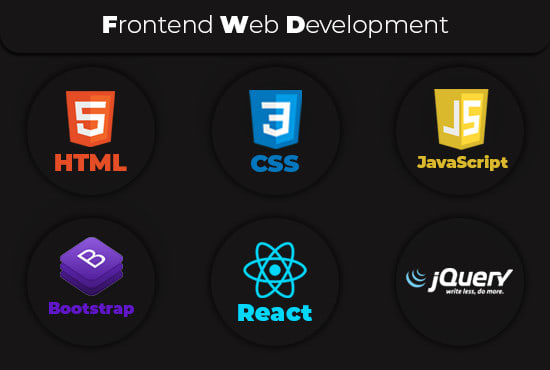

Software
Software
Wat is software?
Software is een verzamelbegrip voor:
1- computerprogramma’s
2- applicaties
3- besturingssystemen
Het is een geheel van computerprogramma’s met data die zowel bewerkingen als taken uitvoeren. Software is niet tastbaar, het heeft geen materiële component, maar zorgt er juist voor dat tastbare apparaten werken en doen waarvoor ze zijn ontworpen. Bovendien zorgt software ervoor dat jij met deze apparaten kunt communiceren en ze kunt vertellen wat je wilt doen.
Zie het als de draadjes die de poppen laten dansen.
Computers, smartphones en tablets maken gebruik van software, maar allerlei gebruiksartikelen ook. Als de software in een apparaat of gebruiksartikel geïntegreerd is, zoals bij een televisie, magnetron, auto of wasmachine, dan hebben we het over embedded software, of ingebouwde software.
Nu snap je ook meteen het verschil tussen software en hardware. Hardware is iets materieels. Denk bijvoorbeeld aan de fysieke componenten van een computer, het beeldscherm, de computerkast en ook de niet zichtbare elementen waaronder de videokaart, het moederbord en de harde schijf. Software daarentegen stuurt altijd de hardware componenten aan en is nodig om andere programma’s zoals een foto-editor of een boekhoudprogramma op een computersysteem te laten draaien.
